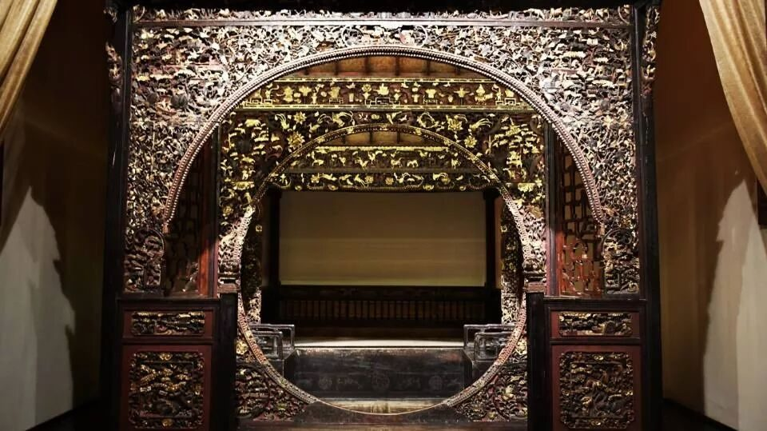
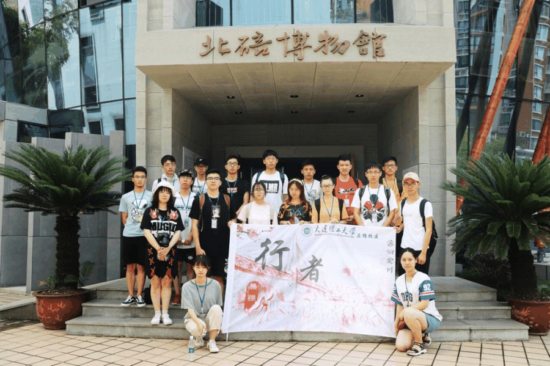
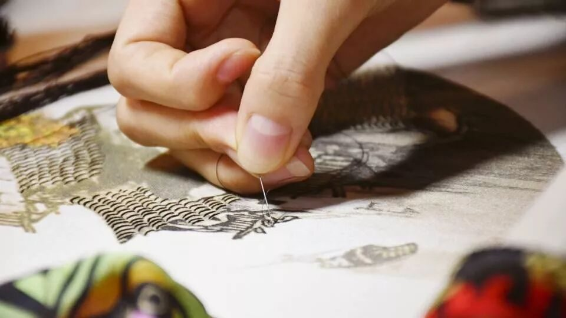
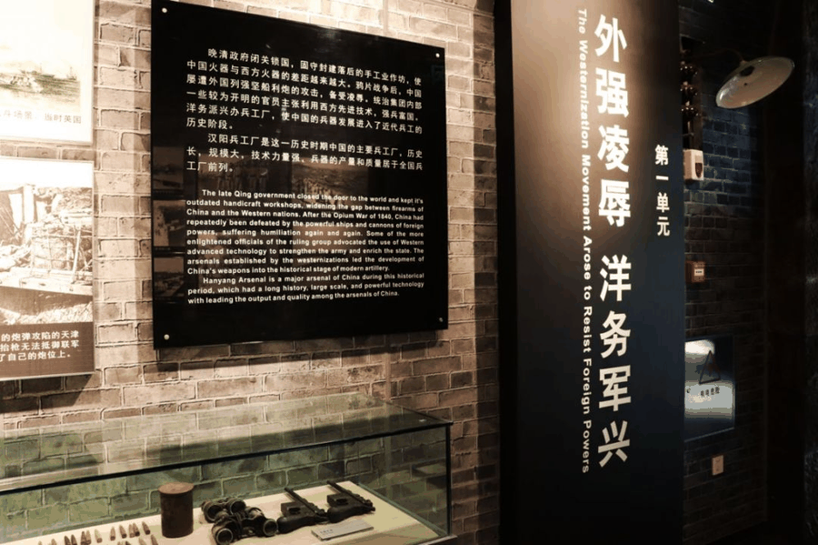
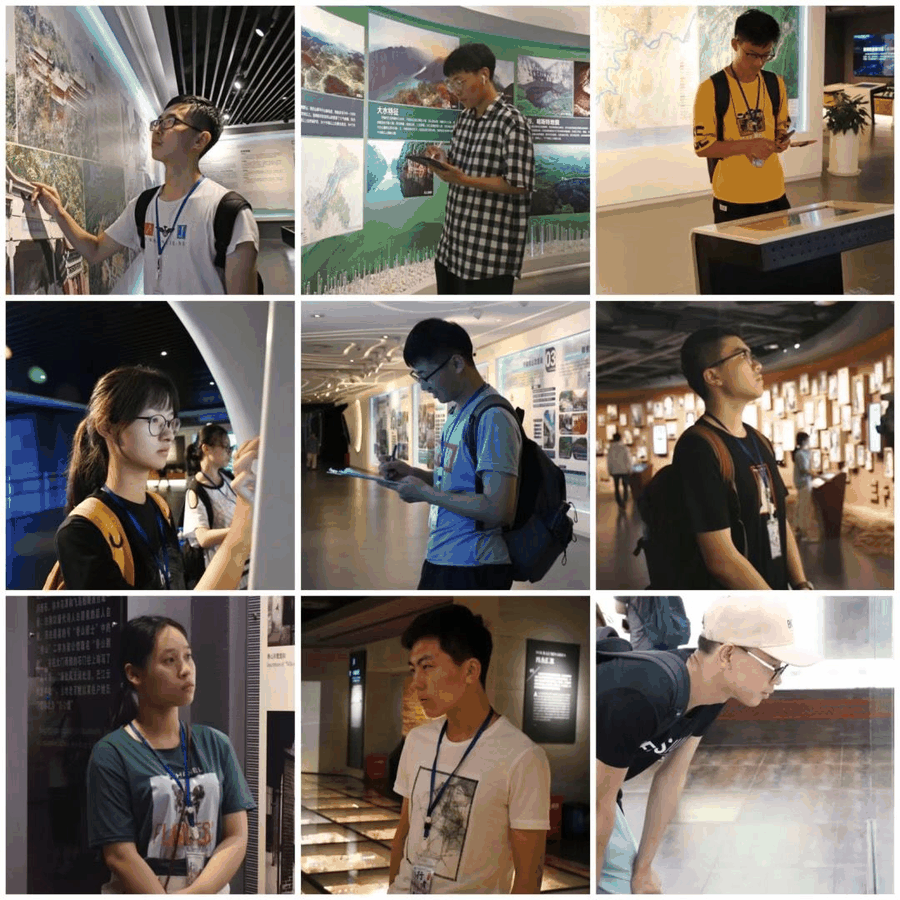
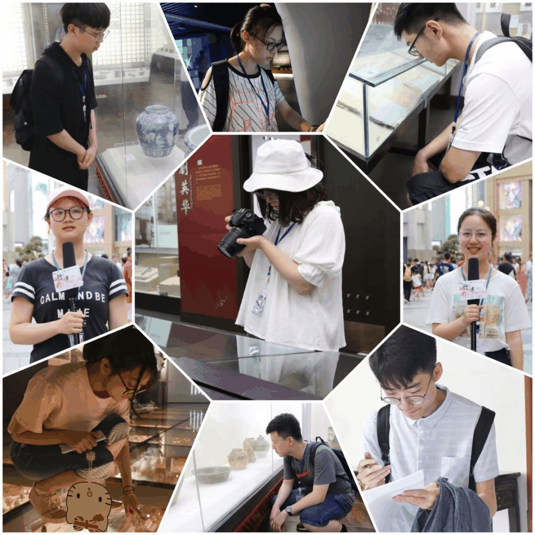

【渝传尺素·三】 你我是7月奔跑的太阳

行者
江新林
“新林，下期行者你还准备继续参加吗？”
“能给我点时间吗？我考虑一下，说实话，我还没有想好，甚至还未想过这个问题”
这件事成了我那段时间最难做的选择，我记得在寝室犹豫徘徊了很久，直到室友的几句话才让我顿悟，他说大学时间本来就短，那为什么不去做一些有意义的事情呢？错过了这次考驾照，下次可以再来，但错过了这期行者，那剩下的可能只有遗憾了，就这样，我决定和新一期的小伙伴捉住六月的尾巴，向七月出发。
如果说六月是热情的，
那么七月就是火辣的。
我们顶着烈阳行走在重庆的各地，一路发放我们的问卷，和路人交谈着关于这座城市的文化，大家有说有笑，活似一个大家庭。我之前一直喜欢这样一句话，“读万卷书，不如行万里路”，行者之旅带给我不仅仅只有眼界的开阔，还有心灵的慰藉，在重庆，我看到了山中盘踞巨城，嘉陵长江相汇的壮阔美景，也体味到了与文化大家一起交流，回首当时重庆人家的闲情，白天我们一起在外奔跑，晚上相聚一堂交流，一天可说长也可说短，但如果说不累那肯定是假的。


在巴渝民俗文化村，我被它的床文化所震撼，与现代的床饰完全不同，精美的雕刻与复试楼阁相结合，一层又一层，宛如一间小房子，在床里面说话犹如闭门交谈，这也就成了后来所说的“私房话”。
世人皆知变脸的存在，却不知它产于何处，其实变脸源于四川，是川剧戏剧中的一部分，川剧戏曲文化源远流长，在博物馆了解了川剧的兴起与发展后，深知路途坎坷，发展不易，发展到现在乃是汇聚了先辈们一代又一代的心血，也许它似乎不流行于当代，与当代的快节奏相矛盾，但大师和我们讲道，当我们老了，有时间了，就会慢慢的喜欢上它的咿咿呀呀，明白它真正的的魅力所在。
蜀绣又名川绣，针绣细琢，耗时费力，在古代，一针一线皆表现渝民人们对生活的美好期许，也正是因为这些，渝民人家的生活才如此丰富。

英雄文化同样在重庆人心中根深蒂固，除了那些英勇抗战的烈士们值得我们学习，还有那些在身后默默支持他们的人也值得我们尊敬，复旦大学迁至北碚，教务处长孙寒冰先生带领学生以文代武上战场，翻译那些鼓舞士气的文章，开展救国活动，提高人们的爱国情怀，稳固国内民众的文化基础，为解放重庆做出不可忽略的贡献。
之前我一直不明白为什么革命烈士一代接着一代，从不间断，直到我在建川博物馆看到一位烈士父亲送给儿子的死字旗时，我才明白，那位父亲对儿子说 “我不愿你在我近前尽孝，只愿你在民族份上尽忠”，对啊，小爱有际，大爱无疆，先有大国，后有小家，这种舍小家为大家的英雄精神又怎不让我们学习呢？重庆是一个不缺英雄文化的地方，它是一个山城，也许青山处处埋忠骨才是对它最好的赞赏吧。


一周之期，转眼逝去，留下对重庆的无限念想，感谢行者们一路相随，有你们真好，7月虽炎，但你我如同7月奔跑的太阳，为行者无疆追逐的样子真的很美。


来源丨行者无疆实践团
文字丨江新林
排版丨康艳虎
审核丨邓子孚 段智然
视频丨陈辉
行者无疆实践团
QQ：2758025831

随行者一起认识世界
长按二维码